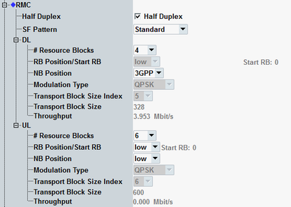

The parameters in this section configure a 3GPP-conform reference measurement channel (RMC) for eMTC.
To display these settings, select the scheduling type "RMC", see "Scheduling Type".
To configure the RMC, proceed as follows (for UL and DL):
Select the cell bandwidth (see "Physical Cell Setup").
Configure half duplex or full duplex.
Select the subframe pattern.
Select the number of allocated resource blocks (RB).
Select the RB position within the narrowband (NB).
Select the NB position.
Select the modulation type.

Selects between half-duplex operation and full-duplex operation.
Remote command:Determines the subframe pattern for eMTC RMCs.
The eMTC RMCs are defined in 3GPP TS 36.521 (keyword: UE category M1). This parameter selects according to which 3GPP TS 36.521 section the subframe pattern is configured.
"Standard" | The subframe pattern is defined in 3GPP TS 36.521 "Annex A", in the footnotes of the RMC definition tables. |
"6.3.4EA" | The subframe pattern is defined in section 6.3.4EA "ON/OFF time mask for UE category M1". |
"6.3.5EA.3" | The subframe pattern is defined in section 6.3.5EA.3 "Aggregate power control tolerance for UE category M1". |
"6.5.2.1EA.2-A/B" | The subframe patterns are defined in section 6.5.2.1EA.2 "PUSCH-EVM with exclusion period for UE category M1". Pattern A contains a subframe with high power followed by a subframe with low power. Pattern B contains a subframe with low power followed by a subframe with high power. |
Selects the number of allocated resource blocks. This parameter influences the allowed modulation types.
Remote command:Selects the position of the first allocated resource block within the narrowband.
Remote command:Selects the narrowband, see also Table "NB position values depending on bandwidth".
Remote command:Selects the modulation type. This parameter influences the transport block size index.
Remote command:Displays the transport block size index, depending on the other settings.
Remote command:Displays the transport block size in bits.
Remote command:n/a
Displays the expected maximum throughput in Mbit/s (averaged over one frame).
Remote command: